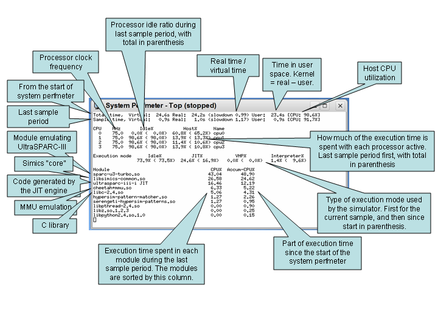

This chapter covers various topics related to Simics performance and what can be done to measure and improve it. It discusses the general performance features provided by Simics. For ways to scale the simulation even further see chapter 4.2.
Simics is a fast simulator utilizing various techniques such as run-time code generation to optimize performance. In some cases Simics can execute code faster than the target system being simulated, while it can also be considerably slower in other cases.
There are four major execution modes Simics uses to execute target instructions: hypersimulation, VMP, JIT and interpreted mode.
Hypersimulation means that Simics detects repetitive work performed by the target code and performs the effects of the code without actually having to run the code. In the most simple case this is a simple idle loop, but it can also be applied to more complex examples such as spin-locks and device polling. This is the fastest execution mode.
VMP, which is a part of Simics's x86 models, utilizes the virtualization capabilities of modern processors to run target instructions directly. This typically results in high simulation performance, but the host and target needs have the same instruction set, and you have to do special set up to enable it. VMP is currently only supported on x86 hosts.
JIT mode uses run-time code generation to translate blocks of the target instructions into blocks of host instructions. JIT mode is when Simics runs such translated blocks. This mode is supported by most target processor models in Simics.
Interpreted mode interprets the target instructions one by one. This mode is the slowest, but it is always available.
There are basically two ways to measure Simics performance:
In most cases the user is mostly interested in the first. Simics should execute instructions as fast as possible to finish the workload in shortest possible time. However, since Simics is a full system simulator, it is also important that the virtual time on the simulated machine advances quickly. That is important in cases where a program or operating system is waiting on a timer to expire or an interrupt from a device in order to proceed with the workload.
If we divide the wall-clock time on the host that Simics executes on, with the elapsed virtual time on the target machine, we get a slowdown number.
slowdown = Timehost/Timevirtual
A slowdown number of 2.3 means that Simics performance is 2.3 times slower than the system it simulates. A slowdown value of less than 1.0 means that Simics manages to execute the corresponding code faster than the system it simulates. The slowdown depends on various factors:
The default time model in Simics is that each target instruction takes one target cycle to execute. That is the default, Instructions Per Cycle (IPC) is 1.0. This is a simplification (but in many cases an adequate approximation) compared to the actual time it takes on the real hardware to execute instructions. It is possible to change the IPC number using the <cpu>.set-step-rate command. For example:
simics> board.mb.cpu0.core[0][0].set-step-rate ipc = 1.5
Setting step rate to 3/2 steps/cycle
simics> board.mb.cpu0.core[0][0].set-step-rate ipc = 0.5
Setting step rate to 1/2 steps/cycle
In the first example, IPC of 1.5 means that Simics needs to execute 3 instructions for 2 cycles to elapse. In the second example, for each instruction executed two cycles elapse. Thus, with a lower IPC value, virtual time will progress faster and simulation slowdown will decrease.
Note that there is nothing wrong in changing the default IPC when it comes to the accuracy of the simulation. In many cases, the IPC observed for a given benchmark is much lower than the 1.0 that Simics assumes, and matching it will both make the simulation closer to the real hardware and improve the simulation speed, at least in virtual time. Simulations that profits most from this change are simulations involving devices and long memory latencies.
The system-perfmeter extension can be used to understand the performance you get out of Simics. The system-perfmeter is sample based, which means that you can see the performance during the workload execution, and how it varies, not only the end result when a workload is finished.
The easiest way to try it out is simply to issue the system-perfmeter command without any additional arguments:
simics> system-perfmeter
This will cause a sample to be taken every 1.0 virtual seconds. For each sample the system-perfmeter extracts various counters from Simics and displays the delta since last time. The output can look like this:
simics> c
SystemPerf: Total-vt Total-rt Sample-vt Sample-rt Slowdown CPU Idle
SystemPerf: -------- -------- --------- --------- -------- ---- ----
SystemPerf: 1.0s 6.0s 1.00s 5.99s 5.99 97% 0%
SystemPerf: 2.0s 6.7s 1.00s 0.69s 0.69 97% 0%
SystemPerf: 3.0s 8.0s 1.00s 1.34s 1.34 92% 0%
SystemPerf: 4.0s 8.4s 1.00s 0.42s 0.42 100% 0%
SystemPerf: 5.0s 9.2s 1.00s 0.78s 0.78 98% 14%
SystemPerf: 6.0s 10.5s 1.00s 1.31s 1.31 96% 55%
SystemPerf: 7.0s 10.7s 1.00s 0.12s 0.12 92% 93%
SystemPerf: 8.0s 10.7s 1.00s 0.00s 0.00 100% 100%
Here we can see the execution for the first 8 virtual seconds and the corresponding performance measured in each second sample. To simulate these 8 virtual seconds, it took Simics 10.7 host seconds, thus the average slowdown is 1.34.
The CPU column shows how much of the host CPU that Simics has used, allowing you to notice if there is another process consuming the host CPU resources. Another reason for CPU utilization to be low can be that Simics itself is running in real-time mode where Simics sleeps so that virtual time does not race ahead of host time.
When an 'idle' condition has been detected (see chapter 4.1.4.1), the total idleness of the system is reported in the Idle column. If the simulated system consists of multiple processors and you wish to see how much each processor is idling you can use the -cpu-idle switch to system-perfmeter. Note that idling is defined by the simulator, not by the target architecture (see chapter 4.1.4.1). With the -cpu-exec-mode, information is also gathered and printed on how simulation steps are executed in the CPU model. The fastest mode to be executing in is idle, followed by VMP, JIT, and interpreter.
The system-perfmeter can also be used to get an understanding of which processor that takes the longest time to simulate. The -cpu-host-ticks switch adds extra columns per CPU for this. For example:
SystemPerf: Total-vt Total-rt Sample-vt Sample-rt Slowdown CPU Idle [ 0 1 2 3 ]
SystemPerf: -------- -------- --------- --------- -------- ---- ---- --- --- --- ---
SystemPerf: 1.0s 15.6s 1.00s 15.63s 15.6 99% 74% [ 71 11 11 8 ]
SystemPerf: 2.0s 32.6s 1.00s 16.97s 17.0 98% 72% [ 70 11 10 9 ]
Here we have a 4 CPU system which is idle roughly 70% and the last columns show that CPU0 takes 70% of the time to simulate, while the other three about 10% each. Hence CPU0 is working while the other CPUs are idling.
The -module-profile flag enables live profiling of the main Simics thread. The profiling is sample based, and any sample hitting in code produced dynamically by a JIT engine will be reported as "classname JIT". The -module-profile data is not printed in the standard line print mode, so you must use either -top or -summary to get profiling information.

system-perfmeter -top -module-profile -cpu-exec-mode Figure 31 explains the output of system-perfmeter. There are many other options to the system-perfmeter command, please read the associated help text for details.
simics> help system-perfmeter
With Simics Accelerator, simulation performance can be increased by utilizing host system parallelism. Simics exploits available target system parallelism and spreads the load over available host cores, in order to increase performance.
Simics Accelerator has two different mechanisms that can operate alone or work together to improve performance. The first is Simics® Multimachine Accelerator which is based upon the cell concept. The other mechanism is Multicore Accelerator which can parallelize simulation even within cells.
A cell ideally contains tightly coupled parts of the target system (typically one or more CPUs and associated devices). Different cells can be simulated in parallel with Multimachine Accelerator (which is default on), but unless Multicore Accelerator is enabled (default off), a single cell will be simulated in a single-threaded fashion (see chapter 4.2 for more details).
The Multithreaded Simulation Profiler tool (mtprof) can be used to analyze some performance aspects of multithreaded simulation. Mtprof is primarily useful to
The Multithreaded Simulation Profiler helps in understanding threading behavior at the Multimachine Accelerator level. There is no explicit tool support for optimizing specific Multicore Accelerator issues.
The Multithreaded Simulation Profiler is started with the following command:
simics> enable-mtprof
When mtprof is enabled, Simics keeps track of how much CPU time is spent simulating each cell in the system. Once Simics has been running for a while, it is possible to ask mtprof for an overview:
simics> mtprof.cellstat
============================================================
cellname rt %elapsed %cputime
------------------------------------------------------------
ebony3.cell3 77.0s 93.6% 80.0%
ebony1.cell1 8.9s 10.9% 9.3%
ebony2.cell2 8.2s 10.0% 8.5%
ebony0.cell0 2.1s 2.5% 2.1%
------------------------------------------------------------
elapsed_realtime 82.2s 100.0% 85.5%
============================================================
From the above output, we can conclude that cell3 is a limiting factor: the other cells frequently have to wait upon this cell in order to keep the virtual time in sync. Investigating why cell3 is so expensive to simulate is the next natural step: there might be an expensive poll loop or the idle optimization might not function properly, for instance. Other potential ways to address the load imbalance include
The mtprof tool can also be used to estimate how fast the simulation would run on a machine with enough host cores to allow Simics to assign a dedicated host core to each cell:
simics> mtprof.modelstat
============================================================
latency rt_model realtime/rt_model
------------------------------------------------------------
10 ms 81.9s 100.4%
40 ms 81.2s 101.2%
160 ms 80.3s 102.4%
640 ms 78.6s 104.6%
============================================================
The latency column corresponds to various values for set-min-latency. In this case, the simulation was executed with a 10 ms latency, which means that the model predicts that the simulation would take 81.9 s to run (which is pretty close to the measured value of 82.2 s above).
It is important to note that the performance model does not take modified target behavior, due to different latency settings, into account (which can be a huge factor if the cells interact). With substantial inter-cell interaction, only the row corresponding to the current latency setting should be trusted.
Below is an example from a more evenly loaded system run with a min-latency of 1 ms:
simics> mtprof.modelstat
============================================================
latency rt_model realtime/rt_model
------------------------------------------------------------
1 ms 35.3s 107.4%
4 ms 29.5s 128.8%
16 ms 25.9s 146.3%
64 ms 24.2s 156.5%
============================================================
In this case, we see that increasing the latency setting to about 16 ms would improve simulation performance substantially (once again, without taking changed target behavior into account).
Quite often, the target behavior is not static but varies with simulated time. In that case, it is often useful to export the collected data and plot it using an external tool:
simics> mtprof.save-data output.txt
The exported data is essentially the information provided by mtprof.cellstat and/or mtprof.modelstat, but expressed as a function of virtual time (exported in a plot friendly way). The mtprof.save-data command takes multiple flags which can be used to customize the output. One useful flag is -oplot:
simics> mtprof.save-data mtprof-plot.m -oplot
which outputs the data in the form of an Octave file together with commands which plots the data.
The mtprof tool currently does not support Multicore Accelerator.
Whether to use Multicore Accelerator or not depends heavily on the workload of the system that is being modeled. Multicore Accelerator performs best for systems with CPU intensive tasks, with little communication, and a low I/O rate. The print-device-access-stats and system-perfmeter commands can be use measure the frequency of I/O operations in the system. (I/O operations are expensive in Multicore Accelerator mode.)
Note that some systems perform well even if the number of target instructions per I/O operation is as low as 300 while others perform bad even though this number is considerably higher. Different target systems behave differently, and in the end, one have to benchmark each system by itself to get highest possible performance. As a guideline, if a target system executes less than 10,000 instructions per I/O operation on average, one might have to consider switching off Multicore Accelerator, or tune the system software in order to achieve good performance.
The enable-multicore-accelerator command provides some tuning and settings for Multicore Accelerator. For more information, see the documentation for the enable-multicore-accelerator command.
It is probably best practice to try to optimize the cell partitioning as described in section 4.1.2.1 to find the most resource demanding cells first, and then switching on Multicore Accelerator for those cells (if available host cores still exists). Currently, it is not possible to restrict a number of host cores for particular target CPUs. Simics will instead automatically balance the system as efficient as possible.
Starting with the most important, consider these factors when choosing a platform to run Simics on:
CPU Speed
Simulation is a very compute intensive application. As a general rule, a machine with higher compute performance will outperform a lower compute performance machine unless the simulation is starved for memory. The SPECint2006 benchmark suite (www.spec.org) is a good indicator of compute performance and can be used to compare systems with different processors. Both processor architecture and clock frequency affects the performance. Within an architecture performance scales almost linearly with clock frequency.
Other CPU features such as the size of the caches does affect performance, but less so than the architecture and the clock frequency.
Memory Size
The simulator can operate with less memory than the simulated memory size. It does that by allocating pages only when used and swapping out pages to disk when running low on memory. The memory size needs to be large enough so that the paging of memory to disk does not hurt performance too much.
Number of Cores
Simics Accelerator will utilize multiple host threads to simulate in parallel. If all simulated processors require equal amounts of time to simulate, then the simulator can theoretically utilize as many host cores as there are simulated processors. In practice, the workload is always skewed, meaning that fewer host cores can be effectively utilized. It is more efficient to use multiple cores or processors on a single machine compared to distributing the simulation across multiple host machines.
File System
Running from local disk is faster than running over a network file system. When running low on memory, make sure that the swap directory used by the memory limit feature is located on local disk. Also, solid state disks (SSDs) are highly preferred over traditional rotating disks.
The performance of Simics sometimes depends on the kind of software that runs inside the target machine being simulated. Thus, the slowdown can vary a lot depending on what the target software is currently executing. Here are some general tips for understanding what decreases simulation speed.
Typically, target code which runs with low performance on real hardware due to bad cache behavior, bad memory locality etc. will also cause Simics to run with poor performance.
When an operating system does not have any processes to schedule, it typically runs some tight loop waiting for an interrupt to occur. This is referred to as the idle loop. The way the idle loop is implemented varies between operating systems and the capabilities in the underlying hardware.
For example, the most simple idle loop would be a "branch to itself" instruction. When the processor reaches this instruction, nothing but an interrupt will cause the execution to proceed somewhere else. Another example is when the operating system uses some kind of power-down mode on the processor, causing the processor to stop executing any more instructions (and consequently consume less power). Some processors also have dedicated instructions causing the processor to stop until something interesting happens, such as the x86 HLT instruction. Processor idling in Simics is defined by what the simulator can detect and usually includes architectural states such as halt or power-down, but can also be loops normally executed by the processor.
A fast simulation of the idle loop, is very important in some cases. For example, when simulating multiple processors, we want to use as much of the host CPU cycles as possible for simulating the processor that actually performs useful tasks. Rather than wasting cycles on the idle loop.
Even when simulating a single CPU, fast idle loops can be important, since all of the active processes might be stalling on disk or some other peripheral. Execution of the processes will not continue unless, for example, a disk issues an interrupt.
Simics processor models can sometimes detect idle conditions. When the processor model detects a branch to itself, there is no point in simulating the instruction, if it branches to itself repeatedly.
Instead, Simics is capable of fast-forwarding time until an event that can generate an interrupt is about to be executed. Hence, this model is equivalent to running the branch millions of times, but is much faster.
In some cases, the idle loop in the operating system is more than a single instruction, e.g., it might be a loop checking a variable in memory for the next process to schedule. These more difficult cases can be handled with hypersimulation (see chapter 4.1.5).
The term hypersimulation refers to a simulator feature which can detect, analyze and understand, frequently executed target instructions and fast-forward the simulation of these, thus providing the corresponding results more rapidly.
Being able to detect the idle loop (see chapter 4.1.4.1) is one example of when this technique is applicable. A much more extreme hypersimulation task would be to understand a complete program and simply provide the corresponding result without actually starting the program. Naturally, this is hardly ever applicable, and impossible in general. Busy-wait loops and spin-locks are more realistic examples of cases where it is easy to optimize away the execution with hypersimulation.
Hypersimulation can be achieved in several ways:
CPU handled instruction hypersimulation: The processor model can detect certain instructions which will either stop the execution or jump to itself. This behavior is always enabled, thus disable-hypersim does not change the behavior. Only an exception/interrupt will stop this execution.
Automatic hypersimulation: Automatic detection of certain small loops that only wait for a future event to occur. This feature is only available for some processor models. The -no-auto switch for the enable-hypersim command disables automatic hypersimulation.
Hypersim-pattern-matcher: User-written specifications, hypersim patterns, are used by the simulator to detect waiting loops that match. The hypersim pattern describes the binary layout of the instructions in the loop and the conditions for leaving it. The hypersim-pattern-matcher module contains the framework for writing hypersim patterns.
The following instructions are handled with CPU handled instruction hypersimulation:
| Target | Instruction | Comment |
|---|---|---|
| ARM | mcr | Enabling "Wait for Interrupt" |
| m68k | stop | |
| MIPS | wait | |
| PowerPC | mtmsr | Setting MSR[POW]. |
| PowerPC | b 0 | Branch to itself |
| PowerPC | wait | |
| x86 | hlt | |
| x86 | mwait |
Hypersimulation should be as non-intrusive as possible, the only difference that should be noticeable as a Simics user is the increased performance. Registers, timing, memory contents, exceptions, interrupts etc. should be identical.
Hypersimulation using the hypersim-pattern-matcher may have some intrusions regarding Simics features:
Hypersimulation using the hypersim-pattern-matcher is activated by default, and can be activated/deactivated with enable-hypersim/disable-hypersim.
The hypersim-status command gives some details on what hypersim features that are currently active.
Hypersim patterns are typically fragile, since they depend on an exact instruction pattern. Simply changing the compiler revision or an optimizing flag to the compiler can break the pattern from being recognized.
The QSP-x86 machine does not use hypersim patterns, but with an old PPC-based machine we run the following example:
simics> disable-hypersim
simics> system-perfmeter -realtime -mips
Using real time sample slice of 1.000000s
simics> c
SystemPerf: Total-vt Total-rt Sample-vt Sample-rt Slowdown CPU Idle MIPS
SystemPerf: -------- -------- --------- --------- -------- ---- ---- -----
SystemPerf: 0.1s 0.3s 0.09s 0.33s 3.4 100% 0% 29
SystemPerf: 0.7s 1.3s 0.56s 1.00s 1.8 97% 0% 55
SystemPerf: 0.8s 2.3s 0.13s 1.00s 7.6 99% 0% 13
SystemPerf: 2.0s 3.3s 1.22s 1.00s 0.8 95% 0% 122
SystemPerf: 4.2s 4.3s 2.24s 1.00s 0.4 78% 0% 223
SystemPerf: 5.8s 5.3s 1.54s 1.00s 0.6 97% 0% 153
SystemPerf: 11.3s 6.3s 5.46s 1.00s 0.2 99% 0% 543
SystemPerf: 15.9s 7.3s 4.65s 1.00s 0.2 98% 0% 462
SystemPerf: 21.7s 8.3s 5.82s 1.00s 0.2 99% 0% 579
SystemPerf: 27.5s 9.3s 5.82s 1.00s 0.2 100% 0% 579
SystemPerf: 33.3s 10.3s 5.80s 1.00s 0.2 99% 0% 579
simics> enable-hypersim
simics> c
SystemPerf: 65.6s 11.2s 32.23s 0.88s 0.0 98% 85% 3673
SystemPerf: 491.1s 12.2s 425.52s 1.00s 0.0 100% 100% 42382
SystemPerf: 908.4s 13.2s 417.36s 1.00s 0.0 99% 100% 41550
SystemPerf: 1305.9s 14.2s 397.44s 1.00s 0.0 100% 100% 39745
SystemPerf: 1746.3s 15.2s 440.44s 1.00s 0.0 99% 100% 44039
SystemPerf: 2200.9s 16.2s 454.59s 1.00s 0.0 99% 100% 45457
This configuration has a Linux idle loop optimizer by default. We disable hypersim and execute the code "normally" during boot. After 6 seconds (host) or 12 seconds (virtual) the boot is finished and the operating system starts executing the idle loop. The idle loop itself is executed quickly in Simics, running at 579 MIPS. When idling, almost 6 virtual seconds is executed for each host second. That is, Simics executes 6 times faster than the hardware (the processor is configured to be running at 100 MHz).
Next, we stop the execution, enable hypersim, and continue the simulation. Now we can see the idle loop optimizer kicking in and 400 virtual seconds is executed each host second, that is about 70 times faster than without hypersim enabled.
The VMP add-on for Simics makes use of hardware virtualization support to provide vastly improved performance when simulating x86-based systems. It is an optional part of the x86-based models.
The VMP feature requires that the host machine running Simics has the Intel® Virtualization Technology (Intel® VT) for IA-32, Intel® 64 and Intel® Architecture (Intel® VT-x) enabled in the host machine firmware (the BIOS).
Almost all Intel® processors since the original Core™ architecture, including Xeon® server processors, support the Intel® VT-x feature set. See the Intel® ARK at ark.intel.com for information on specific products.
The Intel® VT-x virtualization feature and the NX execute protection feature must also be enabled in the host machine firmware to run VMP. Look for options under either Security or Virtualization to find where to enable Intel® VT and NX in your firmware. If Intel® Trusted Execution Technology (TXT) is enabled in the firmware, it can also happen that the Intel® VT-x virtualization feature is restricted to trusted applications only; there is usually a special firmware setting controlling this behavior. VMP requires Intel® VT-x to be generally available.
All major features of Simics, including full inspectability of simulated state, and ability to model heterogeneous systems, are fully supported when running with VMP.
Installing and managing VMP kernel modules requires sudo privileges. Installing will compile the kernel module and therefore also requires an environment to build kernel modules. Which packages you need for building kernel modules depend on the distribution of Linux that you are using, but at least for certain Red Hat based distributions you would need gcc-c++, kernel-headers, and kernel-devel. Change directory to the user project and run:
[project]$ bin/vmp-kernel-install
The script will build and then load the VMP kernel module. It will not install it permanently however, but it will tell you how to do that.
Disable VMP temporarily by running the bin/vmp-kernel-unload script, and enable VMP with the bin/vmp-kernel-load script. Permanently uninstall VMP from your host by running the bin/vmp-kernel-uninstall script.
If the installation is read-only, or if you for some other reason want to have the built VMP artifacts outside of the installation, you can give a directory to the relevant VMP scripts, for example:
[project]$ bin/vmp-kernel-install /somewhere/directory
The kernel module can be loaded and unloaded by running the bin\vmp-kernel-load.bat respective bin\vmp-kernel-unload.bat scripts as administrator. To do that, open a command shell as administrator and run:
[project]> bin\vmp-kernel-load.bat
Another way to perform the same action would be to right-click on vmp-kernel-load.bat and select run as administrator.
The /AUTO and /DEMAND options select the start option for the VMP service. With /AUTO (default), the service will be available after restart whereas with /DEMAND makes the service available just until shutdown or reboot, and then VMP has to be loaded again when needed.
If the script fails, see the Windows event log for more information. The most common reason is that Intel® VT-x technology or the NX feature is not enabled in the UEFI/BIOS. The kernel module will also fail to load if the Hyper-V feature is enabled.
Windows 8 and later can be run with Hyper-V enabled. Hyper-V is a feature where the operating system is run as a guest under the control of a hypervisor. VMP cannot be used in conjunction with Hyper-V: loading the VMP kernel module will fail.
There are various ways to disable the Hyper-V feature. Below are instructions for adding an additional boot configuration database entry to make it easy to boot with Hyper-V disabled:
Open cmd prompt as administrator. In the admin prompt, run the following command to duplicate the current boot configuration entry:
bcdedit /copy {current} /d "Win 8.1 with Hyper-V disabled"
This will print the id of the newly created entry, e.g.
The entry was successfully copied to {41f7b750-485b-4f02-9d0e-4c8e3d02c31d}.
Run the following command (replace the id below with the id just printed):
bcdedit /set {41f7b750-485b-4f02-9d0e-4c8e3d02c31d} hypervisorlaunchtype off
Restart the computer with boot option selection (click on Restart while holding down the shift key). Windows will present a blue screen where you can select the newly created boot entry.
With the VMP kernel modules installed, VMP will be enabled by default for each processor. You can disable VMP by running the disable-vmp command.
Due to details about how the Intel® VT feature that VMP is based on works, the acceleration may not kick in. Use the system-perfmeter to find out if a processor actually uses the VMP execution mode. To find out why VMP is not used, either raise the log level of the CPU in question or use the info command on the CPU.
The VMP packages are currently available and supported for Linux and Windows.
Due to bugs in the performance counters on many Intel CPU types, precise instruction counting cannot be achieved with VMP. The only CPU types that we are aware of that do not have this bug is Intel® Core™ Duo/Solo, and Pentium® 4 processors. This results in that slight differences in timing between runs will appear and cannot be avoided due to the bug in the underlying hardware.
Software using hardware virtualization frequently have problems co-existing on a machine. If you are running other software using hardware virtualization such as VMware, VirtualBox, KVM, or Intel® Hardware Accelerated Execution Manager (Intel® HAXM), you may need to unload the driver corresponding to that software before using VMP.
Note that virtualizers such as VMware or Xen in most versions do not expose the Intel® VT feature. Even virtualizers that do expose the Intel® VT feature are likely to either lack support for the performance counters needed to run with VMP, or will have very different performance characteristics compared to native solutions. To summarize, it is highly recommended that VMP is run in a non-virtualized environment.
VMP is designed to be a transparent performance enhancement. The implementation with Intel® VT-x makes that impossible in some areas, and in some other areas we have taken the chance to utilize the VMP mode to tweak performance further. Enabling features that cannot be emulated using Intel® VT-x will automatically disable VMP.
VMP is optimized for software development, and the default timing parameters used in VMP reflect that. The timing settings can be viewed with the info command on the CPU object. As default, VMP timing will stall the PAUSE instruction, the RDTSC instruction, and each port-mapped I/O access for 10 milliseconds. These stalls are added to allow loops containing these operations to consume more virtual time per iteration and therefore speed up simulation if the loop is terminated after a set virtual time. This is controlled by attributes in the CPU object and can be changed if somewhat more realistic timing is more important than maximum simulation speed.
The hardware performance counters are used to figure out the number of executed instructions when running in VMP mode. Since those counters count string instructions as one regardless of the number of iterations, this is the instruction count model that must be used to enable VMP. This is controlled by the one_step_per_string_instruction attribute, and setting that to classic counting will disable VMP.
The TLB model is bypassed in VMP mode. To simulate a particular configuration of the TLB, or listen to the haps that the TLB model generates, VMP has to be manually disabled.
There are a number of parameters in Simics which can be tweaked which might lead to increased performance.
<cpu>.set-step-rate. Similar to reducing the CPU frequency, this will cause virtual time to progress more rapidly with the same amount of instructions executed.real-time module provides some means to achieve this. See command enable-real-time-mode.cpu_freq_mhz). This will cause virtual time to progress more rapidly with the same amount of instructions executed.set-image-memory-limit command. See chapter 2.5.2.3.set-thread-limit command to limit the thread count to the available number of host cores.sim->max_worker_threads attribute controls the number of threads that can be used for JIT compilation. The default number of JIT threads is automatically set conservatively low, to avoid interfering with the execution threads. This attribute can be adjusted at any time. To disable parallel JIT compilation, the sim->use_jit_threads attribute can be set to false. Then the execution threads themselves run the compilation.